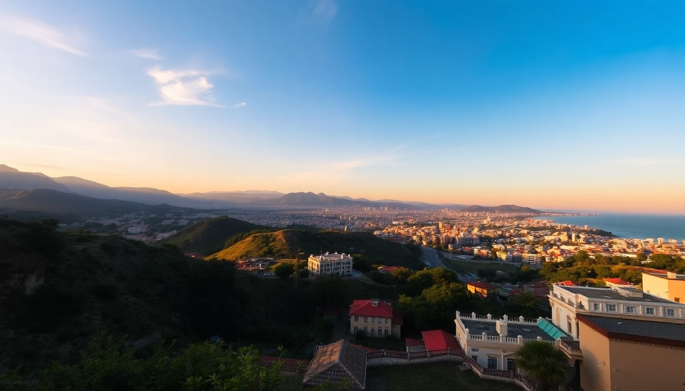

Best Cities to Visit in Peru: Lima, Cusco & Arequipa Guide

I spent three weeks bouncing between Peru’s three big cities — Lima, Cusco, and Arequipa — and each one felt like a different country. Lima is chaotic and delicious, Cusco is high-altitude magic with tourist traps hiding behind every colonial door, and Arequipa is the calm, underrated sibling you wish more people talked about. Here’s what I actually learned, including where I’d stay, what I’d skip, and how to move between them without losing your mind.
Why visit Lima, Cusco, and Arequipa in the same trip?
Most travelers fly straight into Cusco for Machu Picchu and miss the rest. That’s a mistake. Lima gives you the coast and the best food in South America. Cusco gives you Inca ruins and a living colonial city. Arequipa gives you volcanoes and white stone architecture without the crowds. The trio gives you a real range — from sea level to 11,000 feet, from ceviche to alpaca stew.
I’d recommend at least two nights per city. Lima needs three if you’re serious about eating.
What’s the best way to get between Lima, Cusco, and Arequipa?
Fly. The bus rides are long and winding — Lima to Arequipa is 16 hours, Arequipa to Cusco is 10 hours over switchbacks that will test your stomach. Domestic flights are cheap if you book a few weeks ahead.
- Lima to Cusco: LATAM and Sky Airline both fly direct. Flight time is about 1 hour 15 minutes. Book morning flights — afternoon clouds can delay landings.
- Cusco to Arequipa: Same airlines, direct in about 1 hour. The views of the Andes on the descent into Arequipa are stunning.
- Arequipa to Lima: Short hop, 1 hour 30 minutes. No real drama.
If you have the time, the Cruz del Sur bus from Arequipa to Cusco is an experience — you’ll pass through the altiplano and see wild vicuñas — but it’s not comfortable unless you book the “cama” (full recliner) seats.
What should I do in Lima beyond the tourist trail?
Lima’s Miraflores and Barranco neighborhoods are worth the hype, but don’t spend all your time on the malecón (the cliffside park). The real Lima is in the food markets and the less-groomed corners of the historic center.
- Miraflores: Stay at Hotel B if you want boutique luxury, or Selina Miraflores if you’re on a budget. Walk the Malecón de la Reserva at sunset — it’s free and full of locals running, biking, and paragliding.
- Barranco: My favorite neighborhood. Cobblestone streets, street art, and the Bridge of Sighs. Eat at Isolina — a converted mansion serving Peruvian comfort food like tacu tacu (rice and beans with steak). No reservation needed for lunch.
- Mercado de Surquillo: Go here with an empty stomach. It’s a working-class market where chefs shop. Try the chicha morada (purple corn drink) from a stall and a butifarra sandwich.
- Historic Center: The Plaza de Armas is grand, but skip the tourist restaurants around it. Instead, walk to Canta Rana for ceviche — it’s a dive bar with the best leche de tigre in the city.
One honest warning: Lima’s traffic is brutal. Allow 45 minutes for any Uber ride across town, even if the map says 20.
Is Cusco worth the altitude sickness?
Yes, but take it seriously. Cusco sits at 11,200 feet. I felt the headache and shortness of breath within an hour of landing. The locals chew coca leaves and drink coca tea — it helps, but the real fix is slow movement and hydration.
- Day 1: Do nothing strenuous. Walk around San Blas neighborhood — it’s uphill but the artisan workshops are worth it. Stay at Antigua Casona San Blas — a quiet, colonial-style hotel with oxygen tanks in the rooms.
- Day 2: Visit Sacsayhuamán (the Inca fortress above the city). Skip the guided tour — the site is easy to explore on your own. The views over Cusco are better than any postcard.
- Day 3: Take the train to Machu Picchu from Poroy Station (PeruRail’s Vistadome is worth the extra cost for the glass ceiling). Book tickets for the 8 AM entrance — the crowds don’t arrive until 10.
- Food: Morena Peruvian Kitchen in the San Blas area does a lomo saltado that rivals Lima’s. For a cheap lunch, La Valeriana serves set menus for 15 soles (about $4).
Big trap: The Plaza de Armas restaurants with waiters waving menus in English. The food is mediocre and overpriced. Walk two blocks away and you’ll find better.
What makes Arequipa different from the other cities?
Arequipa feels like a smaller, quieter, more elegant version of Cusco — without the tourist hordes. The entire historic center is built from white volcanic stone (sillar), which glows pink at sunset. The altitude is lower (7,600 feet), so you won’t feel like you’re running a marathon just walking to breakfast.
- Plaza de Armas: The cathedral here is massive and worth a look, but the real draw is sitting in a café on the second floor of a colonial building, watching the square from above. Try Café del Museo inside the Museo Santuarios Andinos — they have good coffee and a view.
- Santa Catalina Monastery: It’s a city within a city — a 16th-century convent with bright blue and red walls. Budget 2 hours. It’s not religious; it’s architectural.
- Mercado San Camilo: A proper market. Eat rocoto relleno (stuffed spicy pepper) from a food stall. It’s Arequipa’s signature dish.
- Day trip from Arequipa: The Colca Canyon is a full-day drive (3 hours each way), but the condors at the Cruz del Condor viewpoint are worth the early wake-up. I saw five condors circling within 10 minutes. If you don’t have a full day, skip it — the canyon is beautiful, but the drive is punishing.
Stay at Casa Andina Private Collection Arequipa — it’s right on the plaza, the rooms are quiet, and the breakfast includes fresh jugo de papaya.
When is the best time to visit all three cities?
Dry season is May through September. That’s when you’ll get clear skies in Cusco and Arequipa, and Lima’s fog (the garúa) lifts by late morning. The trade-off is crowds — Machu Picchu gets packed in July and August.
- May and June: My pick. Fewer tourists, green hills in the Sacred Valley, and comfortable temperatures (60-70°F in the day).
- December to March: Rainy season in Cusco and Arequipa. Lima stays mild. You’ll get afternoon downpours in Cusco that turn the streets into rivers. Not ideal for hiking, but the city itself is fine.
- January and February: Machu Picchu is closed for maintenance for two weeks in February. Check dates.
If you’re flexible, go in late April or early November — shoulder months with decent weather and thin crowds.
FAQ
How many days should I spend in each city?
Three nights in Lima, three nights in Cusco (plus one night in Aguas Calientes for Machu Picchu), and two nights in Arequipa. That gives you enough time to see the main sites without rushing. If you’re short on time, cut Arequipa to one night and do a day trip to Colca Canyon.
Is it safe to walk around these cities at night?
Yes, in the tourist areas. Miraflores and Barranco in Lima are safe after dark — stick to well-lit streets. Cusco’s Plaza de Armas and San Blas are fine, but avoid the backstreets near the train station after 10 PM. Arequipa’s historic center is very safe; the main risk is petty theft in markets. Keep your phone in your front pocket.
Do I need to book Machu Picchu tickets in advance?
Absolutely. Buy tickets at least two months ahead for the 8 AM time slot. The government limits daily visitors, and the afternoon slots sell out first. Use the official tuboleto.cultura.pe site — resellers charge double.